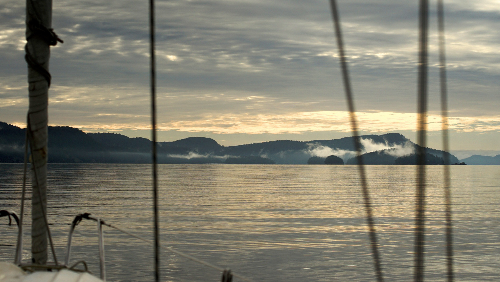
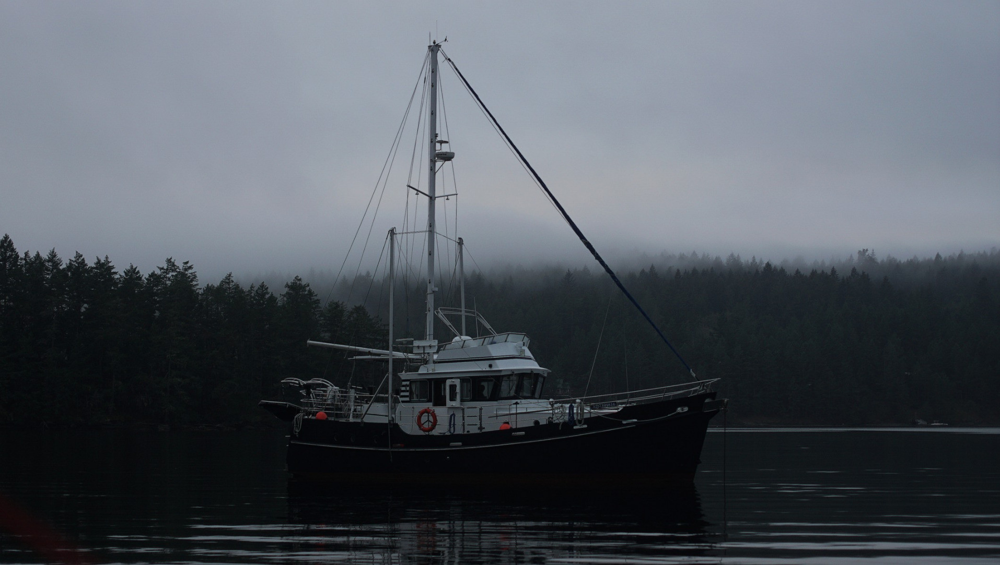
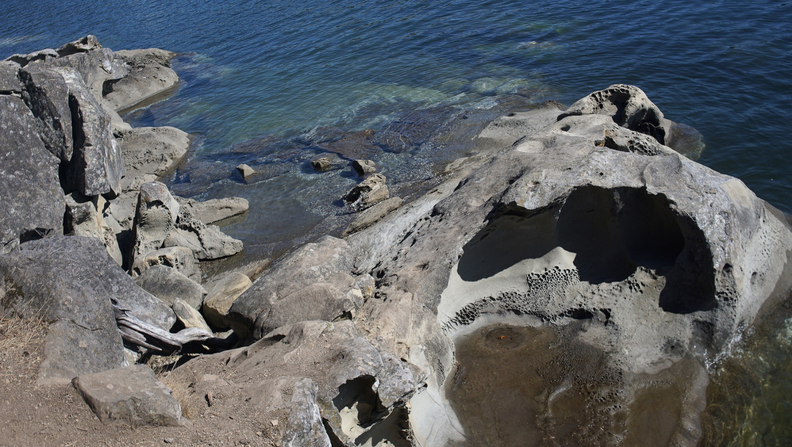
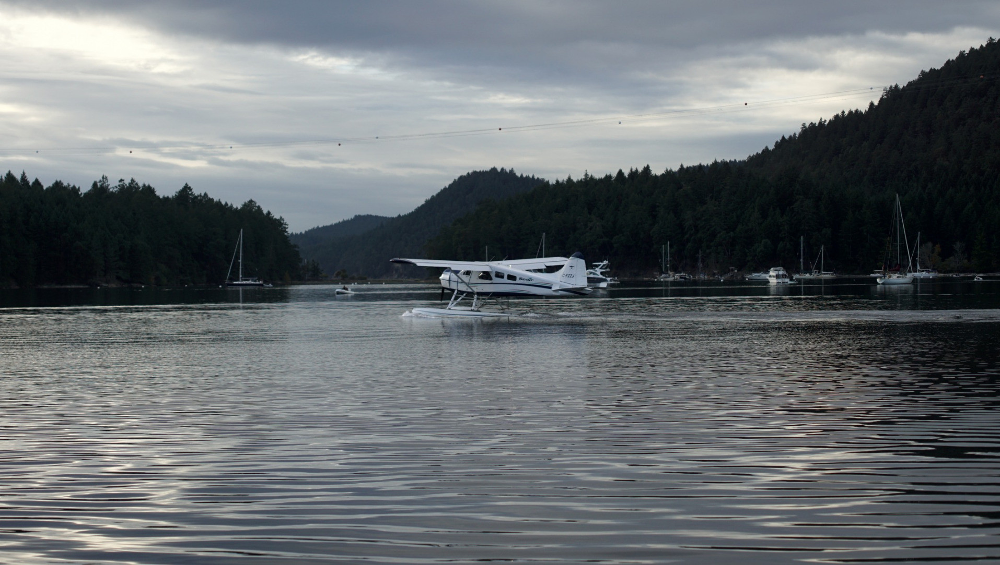

galiano
Montague Harbor on Galiano Island is one of our favorite anchorages in the Gulf Islands.
Why? Because it's big, and because it's big that makes it a dependable stop over. This bay is also protected on all sides. It's a great place to stay without having to worry about the wind turning. Depth in the bay ranges from 30-45 feet, in mud.
There are a lot of moorings, to the north from BC Parks (14$/night in 2021), and to the east and south, although most are nearer to shower in shallower areas. It's also possible to moor onto the park dock just north of the mooring field, at 2$/meter. We've never tried either, because there is always room to anchor, and because there is no Wifi signal there. Wifi is best in the south east corner of the bay.
Despite there being moorings, there is plenty of space to anchor and to set a good scope. The only thing to worry about here is other people, and their anchoring skills. To be fair, this is a problem that all anchorages in the world share. We've seen many people anchoring badly, or needlessly too close to others...
Montague Harbour Marina has a dinghy dock that all can use for land access, they also have a fuel dock but it is not possible to get water here. The island obtains its drinking water from a deep well, and in the summer there is not enough to spare (this is true for most of the Gulf Islands).
From the marina dinghy dock, it's a short walk to the Montague Harbour Provincial Park. The park is really worth visiting, we'd go walking there almost every day.
When the tide is low, it's possible to walk on the inside of Gray Peninsula by the shore, on the rocks. There are plenty of barnacles, so it's near impossible to slip. The beach on the north end of the park is beautiful, with a white shell beach and clear, clear waters. Boats also anchor on that side, weather permitting.
Sea planes take off often in the harbor, but they're not a bother. It's fun to watch them, actually.
